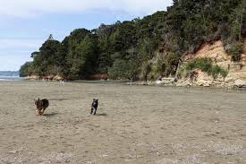

There's alot of beaches in Santa Cruz, but some of them are booty!! However, I don't remember which ones I've been to :D
This is Seabright Beach! It might have fire pits and a large beach area, but once again I don't remember!
When I went to West Cliff Dog Park I didn't know it was a dog park... explains why it was small

Twin Lakes is also a cool beach, but the sandy area has a lot of wood in it so it's mid in my head. But I could also be thinking of a different beach...